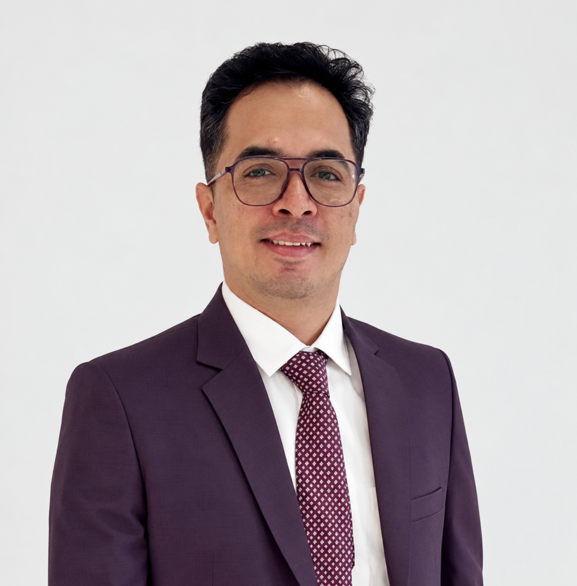

RUDHLAB / ACADEMIC PROFILE
Anirudh KulkarniPhD
Assistant Professor · Department of Mechanical Engineering
Pandit Deendayal Energy University, Gandhinagar, India

ABOUT
Research background
I am a mechanical engineering academic and computational researcher specializing in computational fluid dynamics, computational heat transfer, and numerical methods for transport phenomena.
My work spans finite-volume and lattice-Boltzmann methods, immersed-boundary formulations, porous-media flows, bluff-body aerodynamics, renewable-energy systems, dental simulation, and GPU-accelerated scientific computing.
Current interests include conservative high-performance solvers, multiphase and phase-change transport, CUDA implementation, and machine-learning-assisted surrogate modelling and engineering design.
Academic appointments
Assistant Professor
Department of Mechanical Engineering, Pandit Deendayal Energy University, Gandhinagar, India.
Teaching Assistant & Doctoral Researcher
Indian Institute of Technology Indore, India.
Research Intern
Indian Institute of Technology Indore. Numerical research on flow and heat transfer from porous bluff bodies.
CAD–CAE Tutor & Project Consultant
Soham Technologies. Training and project support in CAD, multiphysics, and CFD/CAE workflows.
Education
PhD · Computational Fluid Dynamics & Heat Transfer
Indian Institute of Technology Indore, India.
BE · Mechanical Engineering
Walchand Institute of Technology, Solapur, India.
Research leadership & supervision
Principal Investigator of the IKS stepwell project and Co-Principal Investigator of projects in underwater rheological characterisation and regenerative electrolysers. All three projects run from 2026 to 2029.
Tannu Parmar is the group’s Junior Research Fellow on the IKS project. Bhau Kolhe is a part-time PhD researcher working on vertical-axis wind turbine analysis and performance improvement.
Project details ↗Teaching
Computational Fluid Dynamics; Fluid Mechanics; Heat Transfer; Thermodynamics; Numerical Methods for Mechanical Engineering; Computational Engineering Laboratory; CFD and Heat Transfer Laboratory; Computer-Aided Design; Elements of Mechanical Engineering; and comprehensive projects.
Academic service & recognition
- Co-mentor of the PDEU Student Satellite Programme.
- NAAC and NBA task-force activities and coordination of comprehensive projects, seminars, and minor projects.
- Hands-on workshops and training in CFD, OpenFOAM, numerical methods, machine learning in CFD, scientific computing, and technical writing.
- Best Poster Award, Third Faculty Research Symposium, PDEU, 2023.
- Ministry of Human Resource Development doctoral fellowship, IIT Indore, 2015–2020.
- Foundation for Excellence undergraduate scholarship, 2009–2013.
Publications
Journal articles and chapters in computational fluid dynamics, heat transfer, renewable energy, and dental mechanics.
Browse the publication list ↗